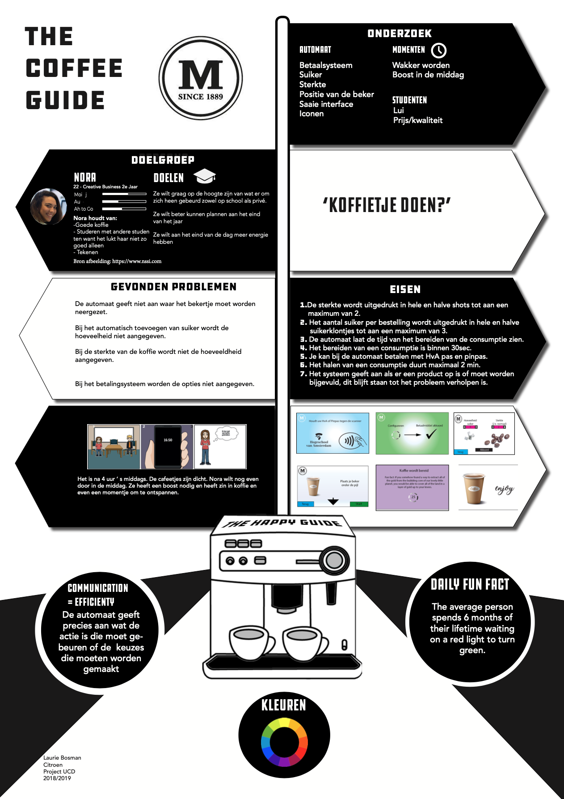

User Centered Design

Maas Coffee is the brand that owns all the coffee machines at the university of applied scienes in Amsteram.
For the subject User Centered Design we had to do a research and redesign the User Experience of the coffee machine.
These are the research methods I used
The end assignment was to recap your research and design in one poster.This poster would be the item you would present to the client which was in this case Maas coffee.
Click on the image to make it bigger
